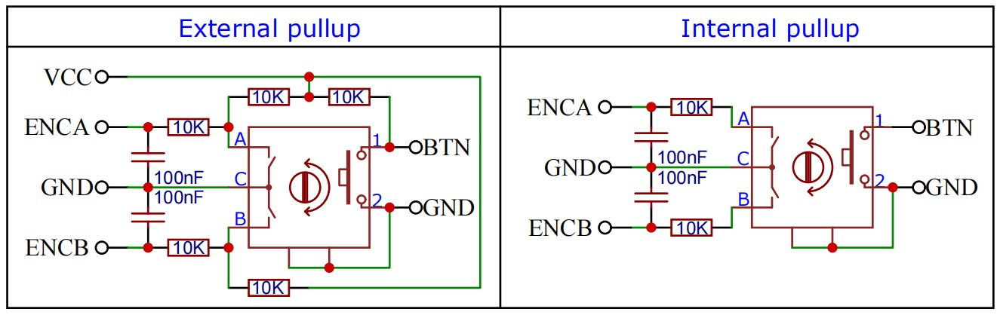
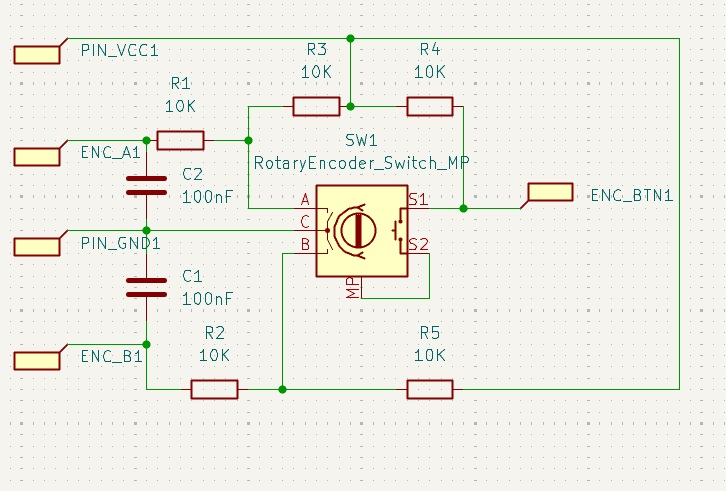
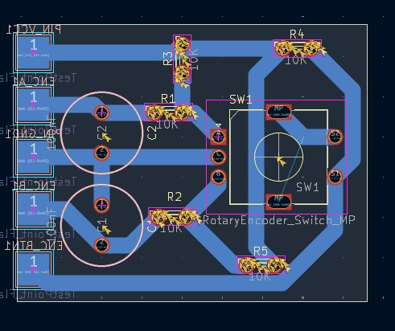
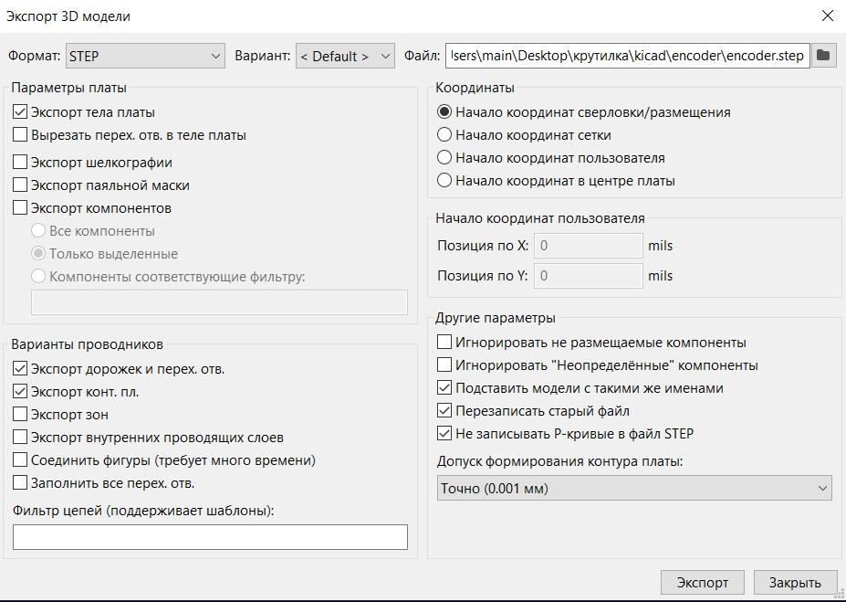
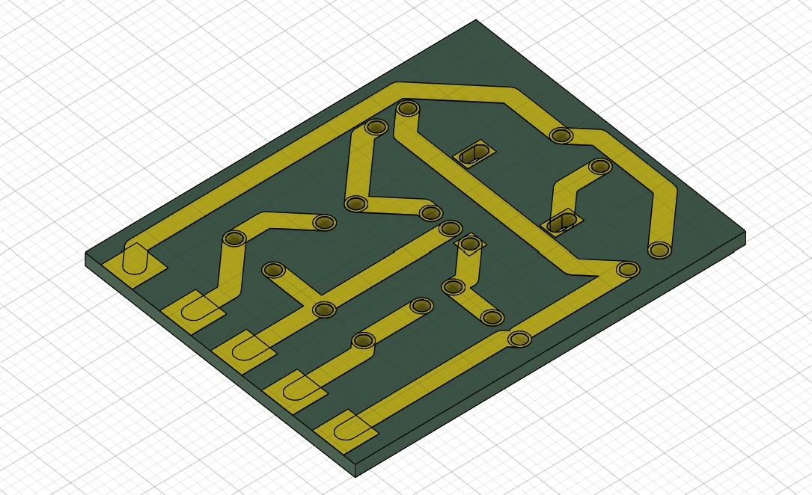
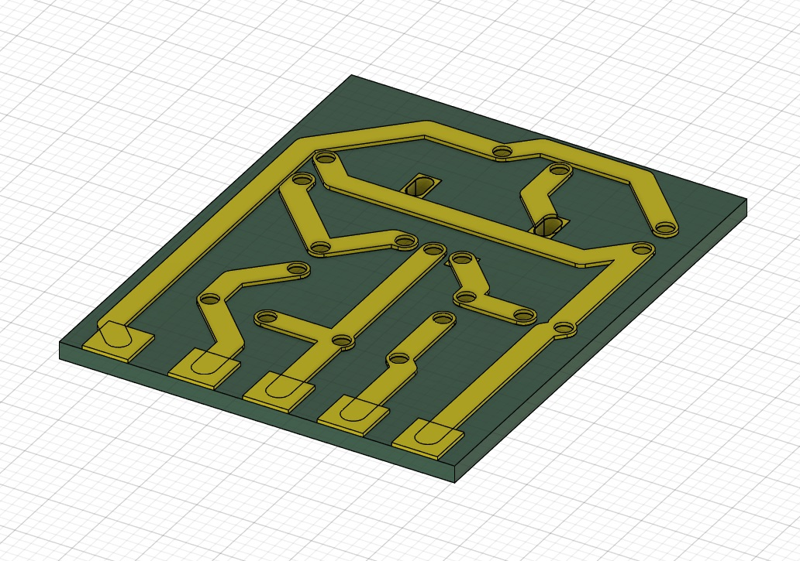
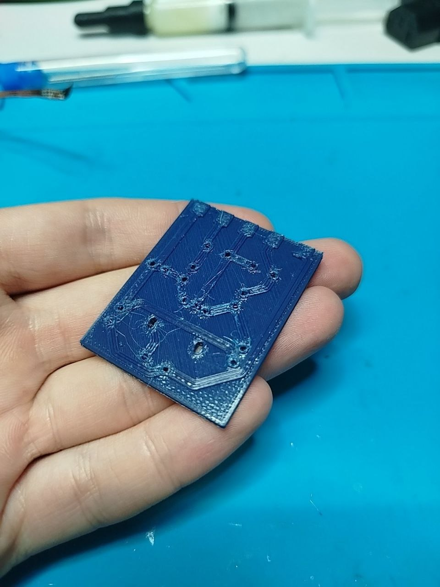
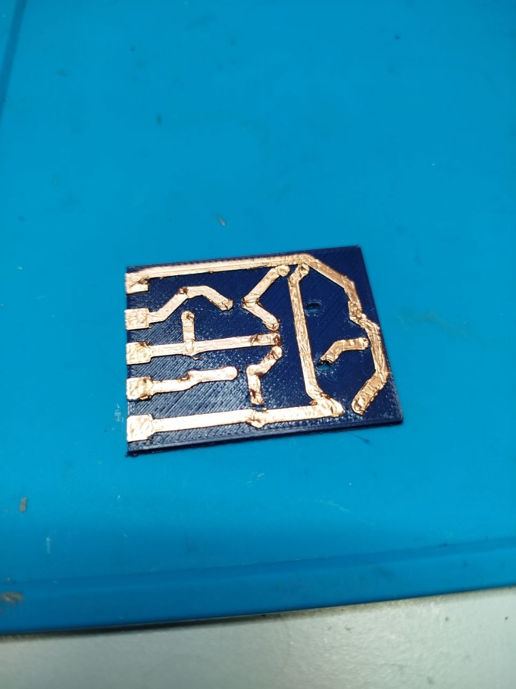
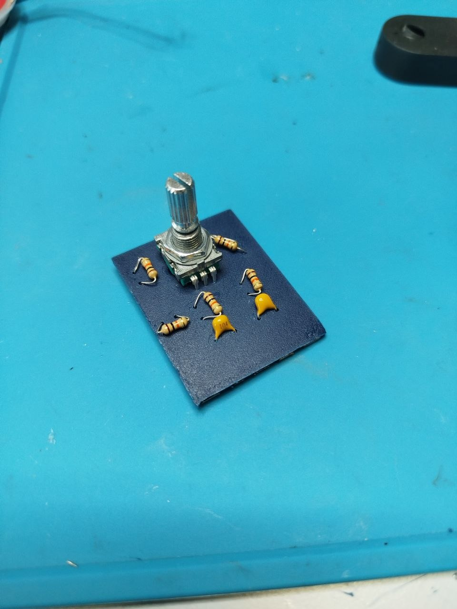
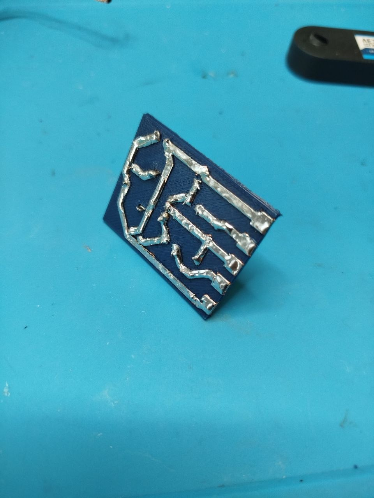

Автоматическая крутилка для советского фотобочка. Печатные платы на 3D-принтере
14 августа 2026
Процесс проявки фотопленки во многом длительный процесс. Особенно, когда занимаешься пушем.
Чтобы не корпеть каждый раз над фотобочком, решил сделать автоматическую крутилку для него.
Акт 1. Печатные платы
Навесной способ печати — не круто, а ЛЗУ использовать не могу, т.к. у меня нету лазерного принтера.
Да, можно использовать метод фоторезиста, но к нему нужна прозрачная пленка и др.
Я видел в интернете видео[1], как используют для создания печатной платы 3Д принтер. Попробуем и мы.
Глава 1. Плата для энкодера
В качестве тренировки попробуем развести плату для энкодера с внешней подтяжкой.
За основу возьмем схему от Алекса Гавера[2].

Получилось что-то типа:

Расставим компоненты и выполним трассировку:
Важно — необходимо зарание определиться с толщиной дорожек и отверстий, которые Ваш принтер может напечатать.
В моем случае:
- Толщина дорожек — 2 мм
- Диаметр отверстий — 1.5 мм

Экспортируем печатную плату с настройками как на картинке:

3Д модель:

Выберем дорожки и вытянем их на 0.3 мм

Отправляем на печать...
В результате у нас получается такая плата:

Наклеим на неё медный скотч и обрежем его по «дорожкам»

Вставим элементы и спаяем их


Печатная плата готова!!!
Итог
Как альтернативный способ создания ПП — пойдет. Очевидный минус данного способа — низкая разрешающая способность (во всяком случае на моем принтере) и низкая теплоотдача. Из плюсов могу отметить простоту и возможность создавать двусторонние[3] печатные платы.
Как говорится «каждому свое»...
Лично я в данном проекте буду продолжать использовать данный способ.